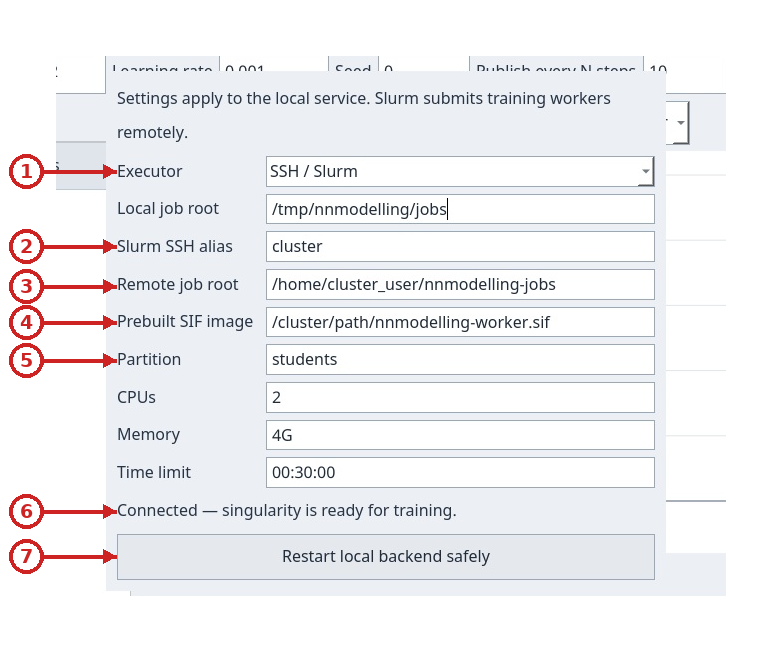
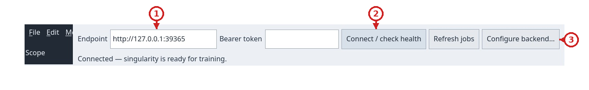

Backend locale e job su Slurm
NNModelling può inviare una copia immutabile del progetto al servizio FastAPI locale. Il servizio, l'API e la cronologia restano su questo computer. Puoi eseguire i job in un container locale oppure inviarli a Slurm via SSH: in quel caso solo il worker gira sul cluster; snapshot, metriche, log e risultati tornano al backend locale. La finestra Training mostra collegamento, cronologia, curve e comandi per annullare, ripristinare snapshot e scaricare risultati.

Clic sull'immagine per leggere i dettagli a dimensione originale.
- Indirizzo del backend
- Connetti e verifica lo stato del servizio
- Apri la configurazione separata del backend

Clic sull'immagine per leggere i dettagli a dimensione originale.
- Connessione al backend
- Configurazione dell’addestramento
- Cronologia e stato delle attività
- Curve della perdita di addestramento e validazione
- Visibilità e scala delle curve
- Perdita finale sul test
- Registro dell’addestramento e del worker
- Azioni per scaricare, ripristinare, annullare e chiudere
Preparare e avviare il servizio
Esegui questi comandi in Bash, dalla directory principale del repository.
Gli esempi con read -s e array AUTH usano la sintassi di questa shell. Servono uv,
just e un runtime Docker compatibile già installato e avviato (Docker o Podman).
Il primo comando installa le dipendenze bloccate del workspace; il secondo crea
l'immagine CPU usata per l'addestramento.
just backend-sync
just backend-image
just backend-run
backend-run resta in primo piano. L'indirizzo predefinito è
http://127.0.0.1:8765; apri un altro terminale per interrogare l'API e usa
Ctrl-C per fermare il servizio. Seleziona Training nell'app e premi
Connect / check health. Il campo endpoint usa già l'indirizzo predefinito.
Eseguire i job sul cluster Sapienza dalla UI
Il servizio FastAPI, il dashboard Training e l'archivio dei job restano su
questo computer. La finestra Local backend service configuration sceglie
Slurm come esecutore; solo i worker vengono inviati al cluster via SSH. Prima
prepara una directory remota scrivibile e un'immagine Singularity (.sif) con
Python, PyTorch, NumPy, safetensors e tutte le dipendenze dichiarate da dataset
e pacchetti. Il cluster deve offrire sbatch, squeue, sacct, scancel,
singularity e python3 via SSH. I job non accedono alla rete. Usa un alias SSH
già configurato sul computer, con autenticazione e verifica delle chiavi host.
1. Prepara immagine e directory remota
Sostituisci utente_cluster e il percorso dell'immagine con valori validi per il
tuo account. Crea la directory una volta:
ssh cluster 'mkdir -p /home/utente_cluster/nnmodelling-jobs && chmod 700 /home/utente_cluster/nnmodelling-jobs'
L'immagine deve già contenere ogni dipendenza Python richiesta dal progetto: durante il job non vengono installati pacchetti. La directory locale dei job conterrà snapshot, metriche, log e artefatti; quella sul cluster contiene solo file temporanei di esecuzione per singolo job.
2. Apri configurazione backend e scegli Slurm
Nel dashboard Training, premi Configure backend…. Si apre una finestra
separata: il dashboard con endpoint, controlli di training, cronologia e curve
resta disponibile. Imposta Executor su SSH / Slurm e compila alias SSH,
directory locale, directory remota, immagine .sif, partizione, CPU, memoria e
limite di tempo. I valori iniziali delle risorse sono students, 2, 4G e
00:30:00; usa i limiti assegnati dal tuo account. Time limit è il limite
di ogni singola allocazione Slurm, non la durata massima del training.

Clic sull'immagine per leggere i dettagli a dimensione originale.
- Selezione dell’esecutore
- Alias SSH di Slurm
- Directory remota assoluta delle attività
- Immagine Singularity precompilata
- Partizione e limiti delle risorse
- Stato di disponibilità del runtime
- Riavvia in sicurezza il backend locale
3. Avvia FastAPI in locale
Nella finestra di configurazione premi Save settings and start local
backend. Nello screenshot il servizio è già attivo, quindi il pulsante propone
un riavvio sicuro; al primo avvio mostra invece l’azione di avvio. Viene avviato solo il servizio locale su loopback. L'app sceglie una
porta libera e aggiorna automaticamente Endpoint nel dashboard. La riga di
stato conferma avvio e disponibilità di Singularity; errori SSH, immagine o
prerequisiti appaiono qui. Le preferenze non segrete vengono salvate per
l'utente. Password SSH non vengono richieste o copiate.
Clic sull'immagine per leggere i dettagli a dimensione originale.
- Selezione dell’esecutore
- Alias SSH di Slurm
- Directory remota assoluta delle attività
- Immagine Singularity precompilata
- Partizione e limiti delle risorse
- Stato di disponibilità del runtime
- Riavvia in sicurezza il backend locale
4. Connetti dashboard e invia job
Torna al dashboard Training: Endpoint contiene già l'indirizzo loopback
scelto dal servizio. Premi Connect / check health se vuoi aggiornare la
verifica. Invia progetto e parametri come per il runtime locale: non servono
flag Slurm nel progetto e la configurazione del modello non cambia. Snapshot e
risultati restano locali; solo il worker viene eseguito dal cluster.
Quando un'allocazione si avvicina al limite, il worker salva automaticamente un checkpoint sicuro e invia un nuovo job Slurm che riparte da quel punto. La UI continua a mostrare un solo job e le sue metriche; gli ID Slurm delle singole allocazioni cambiano. Il servizio backend locale deve restare attivo durante questi passaggi. Se il cluster termina il job prima del segnale di preavviso o prima che il checkpoint sia completo, il job viene mostrato come fallito e non può riprendere automaticamente. Gli iteratori di training personalizzati devono poter essere ricreati in modo ripetibile per permettere il ripristino del punto salvato.

Clic sull'immagine per leggere i dettagli a dimensione originale.
- Indirizzo del backend
- Connetti e verifica lo stato del servizio
- Apri la configurazione separata del backend
I tutorial LLM e VAE seguono lo
stesso percorso. Se manca una dipendenza nella .sif, il job fallisce in modo
visibile: ricostruisci l'immagine prima di riprovare. Per tornare all'esecuzione
Docker locale, apri Configure backend…, seleziona Docker-compatible
runtime e avvia il servizio.
L'esportatore wheel è incluso nell'immagine worker. Dopo aver aggiornato il repository per usare i nomi leggibili, ricostruisci l'immagine worker e riavvia il backend gestito prima di inviare altri job. La ricostruzione non modifica wheel già archiviate: restano scaricabili con nome e contenuto originali. Non rinominarle manualmente.
Esempio: porta 8766 e archivio dedicato
Per tenere questa istanza separata, imposta un archivio locale dedicato e usa la stessa configurazione nel terminale del servizio:
export NNMODELLING_BACKEND_HOST=127.0.0.1
export NNMODELLING_BACKEND_PORT=8766
export NNMODELLING_JOB_ROOT="$HOME/.local/share/nnmodelling/jobs-8766"
export NNMODELLING_CONTAINER_RUNTIME=docker
export NNMODELLING_WORKER_IMAGE=nnmodelling-worker:local
just backend-image
just backend-run
In un secondo terminale verifica il servizio con:
curl -fsS http://127.0.0.1:8766/health
Nell'app apri Training, sostituisci l'endpoint con
http://127.0.0.1:8766 e premi Connect / check health. Usa
~/.local/share/nnmodelling/jobs-8766 per trovare snapshot, log e artifact di
questa istanza. Per arrestarla premi Ctrl-C nel primo terminale.
Per usare Podman oppure un'immagine con dipendenze aggiuntive, usa lo stesso nome di runtime e immagine sia durante la creazione sia durante l'avvio:
NNMODELLING_CONTAINER_RUNTIME=podman just backend-image
NNMODELLING_CONTAINER_RUNTIME=podman just backend-run
NNMODELLING_WORKER_IMAGE cambia il tag dell'immagine (predefinito
nnmodelling-worker:local). I container di addestramento non hanno accesso
alla rete: installa le dipendenze Python dichiarate dalle risorse nell'immagine
prima di inviare il job.
Se una risorsa richiede scikit-image, puoi preparare un'immagine aggiuntiva
con una versione fissata. Salva questo testo come Dockerfile.worker-extra nella root del repository:
FROM nnmodelling-worker:local
USER 0
RUN uv pip install --python /app/.venv/bin/python 'scikit-image==0.25.2'
USER 65532:65532
Costruisci prima l'immagine base con il tag da cui eredita il Dockerfile, costruisci poi l'estensione e selezionala per l'avvio del servizio:
export NNMODELLING_WORKER_IMAGE=nnmodelling-worker:local
just backend-image
docker build -f Dockerfile.worker-extra -t nnmodelling-worker:scikit-image .
export NNMODELLING_WORKER_IMAGE=nnmodelling-worker:scikit-image
just backend-run
Se usi Podman, sostituisci docker build con podman build e imposta
NNMODELLING_CONTAINER_RUNTIME=podman prima di costruire la base e avviare il
servizio. Mantieni le dipendenze dichiarate dalle risorse fissate nell'immagine
e ricostruiscila quando cambiano.
Token facoltativo
Per una sessione locale a utente singolo il token è facoltativo. Per richiederlo, impostalo prima di avviare il servizio e inserisci lo stesso valore nel campo Bearer token della finestra Training. L'input della shell qui sotto non mostra il token mentre lo digiti:
read -r -s -p 'Token bearer: ' NNMODELLING_BEARER_TOKEN
printf '\n'
export NNMODELLING_BEARER_TOKEN
just backend-run
Il servizio mantiene il token solo in memoria. Il client Qt lo mantiene solo
nella finestra corrente e non lo salva nel progetto o nello snapshot. Le
richieste a /v1/jobs richiedono Authorization: Bearer … quando il token è
configurato; /health restituisce solo lo stato del servizio e del runtime.
Il servizio è destinato all'uso locale: mantieni l'indirizzo di ascolto su
loopback, soprattutto quando non configuri un token.
Controllare il servizio
GET /health non richiede autenticazione. status: "ok" indica che l'API
risponde; per addestrare, anche container.available deve essere true.
runtime indica il comando Docker compatibile configurato e error contiene
null oppure il motivo per cui il runtime non è disponibile.
curl -fsS http://127.0.0.1:8765/health
Esempio di risposta con runtime Docker:
{"status":"ok","container":{"available":true,"runtime":"docker","error":null}}
Con Slurm, il blocco container riporta anche "executor":"slurm" e
"runtime":"singularity".
La documentazione OpenAPI è disponibile da http://127.0.0.1:8765/docs.
Inviare un progetto
Salva il progetto nell'app prima dell'invio. Nella finestra Training imposta
epoche, batch, learning rate, seed e Publish every N steps, poi premi Save
project and submit. I valori iniziali sono rispettivamente 10, 32, 0.001,
0 e 10. La cadenza determina ogni quanti aggiornamenti dell'ottimizzatore
vengono pubblicate metriche abbinate di training e validazione; a ogni fine epoca
viene pubblicata anche l'eventuale finestra residua.
L'API accetta questi intervalli: epoche 1–10000, batch 1–4096, learning rate
finito maggiore di 0 e minore o uguale a 1, seed da -2147483648 a
4294967295, cadenza 1–100000. I campi JSON aggiuntivi vengono rifiutati.
Il job registra la configurazione usata e lo snapshot dei file: le modifiche
successive al progetto non cambiano un job già inviato.
Per un invio riproducibile dal terminale, questo esempio usa solo la libreria
standard di Python. Dalla root del repository crea in memoria il bundle del
progetto examples/models/tiny-decoder-llm, poi invia una configurazione breve
da un'epoca. Il contenuto, l'ordine dei file e i parametri sono fissi; lo script
non crea file intermedi. Esclude link simbolici, directory env, .env, venv,
.venv, cache e bytecode, oltre alle cartelle generate usate dall'app. Include
anche gli asset d'inferenza elencati nei manifest delle risorse.
python3 - <<'PY'
import base64
import json
import os
from pathlib import Path, PurePosixPath
from urllib.request import Request, urlopen
base_url = os.environ.get("NNMODELLING_BACKEND_URL", "http://127.0.0.1:8765").rstrip("/")
root = Path.cwd() / "examples/models/tiny-decoder-llm"
if not root.is_dir() or root.is_symlink():
raise FileNotFoundError(f"Example project directory does not exist: {root}")
model = json.loads((root / "model.json").read_text(encoding="utf-8"))
excluded = {
".venv", "venv", "env", ".env", "__pycache__", ".git", "build", "dist",
"target", ".pytest_cache", ".nnmodelling-generated", "node_modules",
}
files = {}
def safe_relative(value):
if not isinstance(value, str) or not value or "\\" in value or "\x00" in value:
raise ValueError(f"Unsafe project-relative path: {value!r}")
parts = value.split("/")
if (PurePosixPath(value).is_absolute() or ":" in parts[0]
or any(part in {"", ".", ".."} for part in parts)
or value == "model.json"):
raise ValueError(f"Unsafe project-relative path: {value!r}")
return Path(*parts)
def excluded_path(relative):
return (
any(part in excluded for part in relative.parts)
or relative.name == ".DS_Store"
or relative.suffix in {".pyc", ".pyo"}
or relative.name.endswith("~")
or ".generated." in relative.name
)
def add_tree(value, required=False):
relative = safe_relative(value.as_posix() if isinstance(value, Path) else value)
if excluded_path(relative):
if required:
raise ValueError(f"Required project resource is in an excluded directory: {relative}")
return
source = root / relative
cursor = root
for part in relative.parts:
if part in {".", ".."}:
raise ValueError(f"Unsafe project-relative path: {relative}")
cursor = cursor / part
if cursor.is_symlink():
if required:
raise ValueError(f"Required project resource uses a symlink: {relative}")
return
if source.is_symlink():
if required:
raise ValueError(f"Required project resource uses a symlink: {relative}")
return
if source.is_file():
name = relative.as_posix()
if name not in files:
files[name] = base64.b64encode(source.read_bytes()).decode("ascii")
elif source.is_dir():
for child in sorted(source.iterdir(), key=lambda path: path.name):
if not child.is_symlink():
add_tree((relative / child.name).as_posix())
elif required:
raise FileNotFoundError(f"Project resource does not exist: {relative}")
for group in ("customPackages", "customDatasets"):
for resource in model["manifest"].get(group, []):
add_tree(resource["path"], required=True)
for folder in ("data", "resources"):
add_tree(folder)
# A resource may declare inference assets outside the conventional directories.
for name, encoded in list(files.items()):
if name.endswith("/manifest.json"):
manifest = json.loads(base64.b64decode(encoded))
for asset in manifest.get("inferenceAssets", []):
add_tree(asset, required=True)
payload = {
"project": model,
"files": files,
"training": {
"epochs": 1,
"batch_size": 8,
"learning_rate": 0.001,
"seed": 0,
"publish_every_steps": 2,
},
}
headers = {"Content-Type": "application/json", "Accept": "application/json"}
token = os.environ.get("NNMODELLING_BEARER_TOKEN")
if token:
headers["Authorization"] = "Bearer " + token
request = Request(
base_url + "/v1/jobs",
data=json.dumps(payload, separators=(",", ":")).encode("utf-8"),
headers=headers,
method="POST",
)
with urlopen(request, timeout=30) as response:
job = json.load(response)
print("HTTP", response.status, "job", job["id"], "status", job["status"])
print("Bundle files:", len(files))
PY
La risposta 202 contiene id, status (queued all'invio), created_at,
error e metrics. Copia l'ID restituito per i comandi successivi:
JOB_ID='incolla-qui-l-id-restituito'
Seguire, annullare e recuperare un job
La cronologia nell'app si aggiorna automaticamente. Da terminale puoi elencare i job e leggere quello selezionato. Se hai configurato un token, il terminale che esegue le richieste è separato da quello del servizio: immettilo anche lì, senza mostrarlo, quindi prepara l'header:
read -r -s -p 'Token bearer: ' NNMODELLING_BEARER_TOKEN
printf '\n'
export NNMODELLING_BEARER_TOKEN
Poi, nello stesso terminale, prepara l'header da riusare nei comandi seguenti:
AUTH=()
if [[ -n "${NNMODELLING_BEARER_TOKEN:-}" ]]; then
AUTH=(-H "Authorization: Bearer $NNMODELLING_BEARER_TOKEN")
fi
Se non hai configurato un token sul servizio, salta la richiesta nascosta e
inizializza solo AUTH=(); le richieste locali sono anonime.
curl -fsS "${AUTH[@]}" http://127.0.0.1:8765/v1/jobs
curl -fsS "${AUTH[@]}" "http://127.0.0.1:8765/v1/jobs/$JOB_ID"
Lo stato può essere queued, running, completed, failed o cancelled.
metrics.epochs contiene i riepiloghi per epoca;
metrics.steps contiene i punti pubblicati per passo, con numero di passo,
epoca e loss di training e validazione. metrics.test_loss resta null finché
la valutazione finale non è disponibile. error riporta il problema per un job
fallito.
Annullare un job è un'azione sul job e non ferma l'API:
curl -fsS "${AUTH[@]}" -X POST -H 'Content-Type: application/json' -d '{}' \
"http://127.0.0.1:8765/v1/jobs/$JOB_ID/cancel"
Un job in coda passa subito a cancelled; per un job in esecuzione la risposta
può mostrare ancora running mentre il container si arresta. Aggiorna il job per
leggere lo stato finale. Ripetere la richiesta per un job già cancelled è
idempotente; i job completati o falliti rispondono 409 e non possono essere
annullati.
Ctrl-C nel terminale di just backend-run ferma il servizio API e avvia lo
spegnimento dei container gestiti; non invia la richiesta di annullamento del
singolo job. Se l'API si riavvia mentre un job risulta ancora running, quel job
viene registrato come failed con un errore di interruzione. I job in coda
vengono recuperati dal servizio.
Lo snapshot restituisce il modello e i file originali del job, con i file codificati in Base64. Puoi salvarlo per ispezionarlo o ripristinarlo dall'app:
curl -fsS "${AUTH[@]}" "http://127.0.0.1:8765/v1/jobs/$JOB_ID/snapshot" -o snapshot.json
Scaricare i risultati
Pesi e wheel standalone sono disponibili solo quando lo stato è completed:
curl -fS "${AUTH[@]}" "http://127.0.0.1:8765/v1/jobs/$JOB_ID/weights" -o weights.safetensors
mkdir -p artifacts
curl -fS --remote-name --remote-header-name --output-dir artifacts \
"${AUTH[@]}" "http://127.0.0.1:8765/v1/jobs/$JOB_ID/wheel"
L'app offre gli stessi comandi Download weights e Download wheel. Per i
nuovi job, il nome della distribuzione è nnm_<id-progetto-normalizzato>; ad
esempio, ID llm produce nnm_llm-0.1.0-py3-none-any.whl. Per normalizzare,
sequenze diverse da lettere e cifre ASCII diventano _, gli underscore iniziali
e finali sono rimossi e il risultato è minuscolo. Il client Qt conserva il nome
completo inviato dal server, che include distribuzione, versione e tag. Il nome
del modulo Python resta invece specifico del job: nnmodel_<id-job-normalizzato>.
Non ricavare l'import dal nome della wheel; leggi il modulo al suo interno. Job
generati dallo stesso progetto, o da progetti con lo stesso ID normalizzato,
condividono distribuzione e versione:
installali in ambienti Python separati. Le wheel archiviate prima della modifica
mantengono nome e contenuto originali; non rinominarle manualmente. La wheel
include il modello, l'adapter necessario all'inferenza e i pesi; non richiede il
servizio né il progetto sorgente per eseguire l'inferenza, ma richiede Python,
PyTorch, safetensors e le dipendenze dichiarate dalla risorsa.
Configurazione
Le variabili seguenti si impostano prima di avviare just backend-run.
| Variabile | Predefinito | Funzione e limiti effettivi |
|---|---|---|
NNMODELLING_BACKEND_HOST |
127.0.0.1 |
Indirizzo di bind passato a Uvicorn. Mantienilo su loopback per uso locale. |
NNMODELLING_BACKEND_PORT |
8765 |
Porta passata a Uvicorn. |
NNMODELLING_JOB_ROOT |
~/.local/share/nnmodelling/jobs |
Directory persistente di job, snapshot, log e risultati. |
NNMODELLING_BEARER_TOKEN |
non impostato | Se presente, protegge le rotte /v1/jobs. Il token non viene scritto nei record dei job. |
NNMODELLING_CONTAINER_RUNTIME |
docker |
Nome o percorso dell'eseguibile compatibile Docker; deve essere sul PATH. |
NNMODELLING_WORKER_IMAGE |
nnmodelling-worker:local |
Immagine usata per just backend-image e per i job; i due tag devono coincidere. |
NNMODELLING_CORE_ROOT |
stereotype-packages/core nella root del repository |
Directory dei pacchetti core; in genere non serve modificarla. |
NNMODELLING_MAX_BUNDLE_BYTES |
46 MiB |
Limite totale dei byte decodificati dei file inviati. |
NNMODELLING_MAX_PROJECT_BYTES |
8 MiB |
Limite del JSON del modello. |
NNMODELLING_MAX_FILES |
10000 |
Numero massimo di file nel bundle. |
NNMODELLING_MAX_FILE_BYTES |
128 MiB |
Dimensione massima di un singolo file. |
I quattro limiti MAX_* sono convertiti da stringa a intero all'avvio; il
servizio non applica un ulteriore intervallo o valore minimo a queste
impostazioni. I valori standard sono allineati ai controlli dell'API; il client
Qt applica inoltre un massimo complessivo di 256 MiB ai file locali prima della
codifica Base64. Il limite predefinito del server per i file decodificati è
46 MiB e quindi può rifiutare bundle più grandi anche se il client li ha
accettati. Le metriche serializzate hanno un limite fisso di 64 MiB.
Il worker usa un container senza rete, con mount dello snapshot in sola lettura,
output separato in scrittura, due CPU e memoria limitata a 4 GiB. Il log di
worker del job si trova in
<NNMODELLING_JOB_ROOT>/<id>/output/worker.log.
Problemi comuni
- Se
/healthnon risponde, controlla chejust backend-runsia ancora attivo, che host e porta coincidano con l'endpoint nell'app e che la porta non sia già occupata. - Se
/healthrisponde concontainer.available: false, l'API è attiva ma il runtime indicato incontainer.runtimenon è pronto. Avvia Docker/Podman, verifica che l'utente possa usarlo e controlla che il comando sia sulPATH. - Se il job fallisce subito, leggi il campo
errornella risposta del job e<NNMODELLING_JOB_ROOT>/<id>/output/worker.log. Una dipendenza Python mancante deve essere aggiunta all'immagine prima del nuovo invio. 413indica che è stato superato un limite di richiesta, bundle, modello, numero di file o singolo file. Escludi dati e ambienti che non fanno parte del progetto; verifica anche i valoriNNMODELLING_MAX_*impostati.401indica che manca il bearer token richiesto o che non corrisponde a quello impostato nel servizio.404significa che il job non esiste nell'archivio corrente.409sugli artifact indica che il job non è completato;409sulla cancellazione indica che il job non è in uno stato annullabile.- Se il servizio è stato interrotto mentre un job era in esecuzione, consulta il
suo campo
error: il servizio marca il lavoro interrotto comefailedinvece di dichiararlo completato senza metriche e artifact validi.